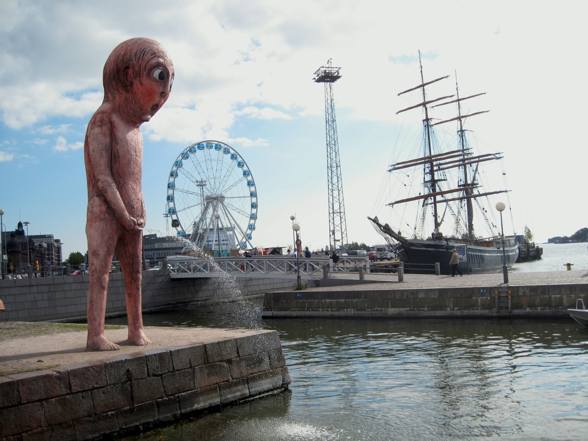
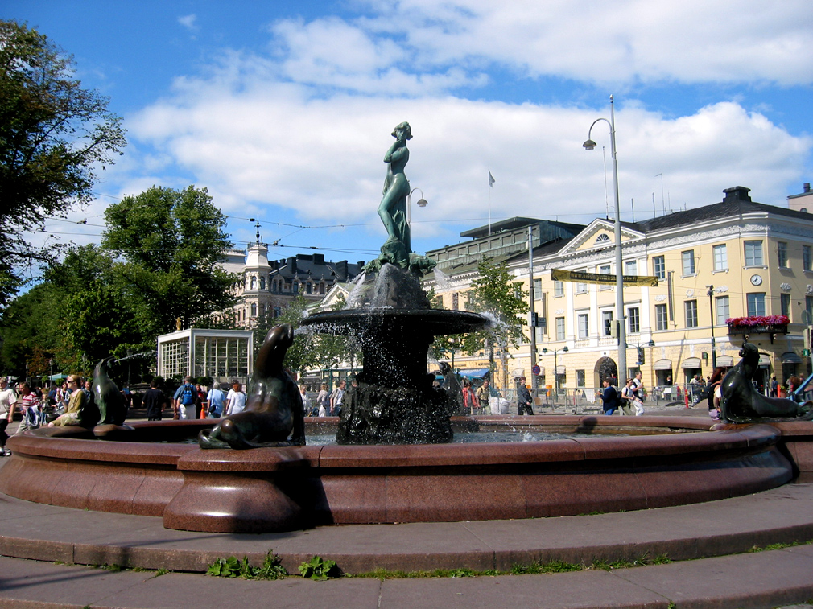
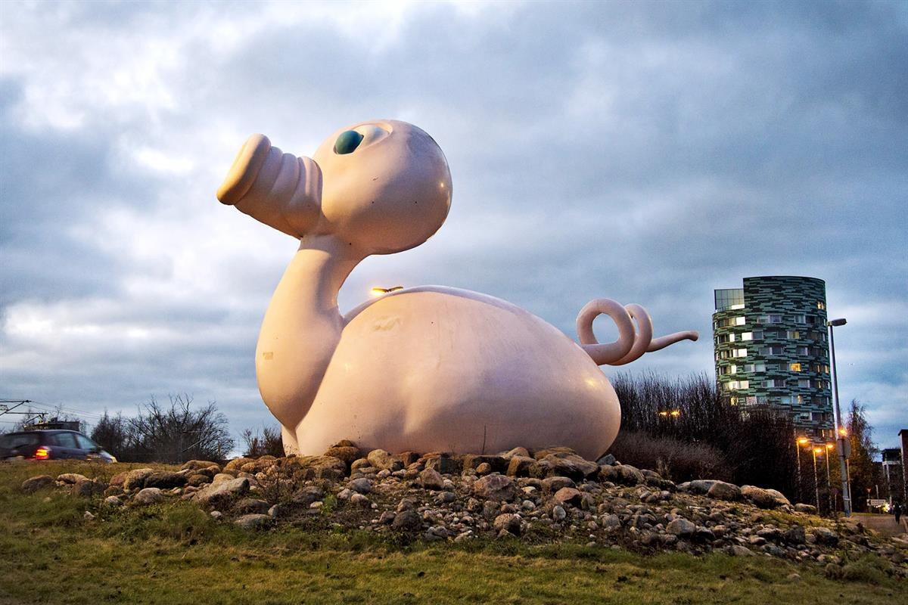

Monuments of Finland
Alexander I And The Porvoo Diet 1809 Sculpture
This tympanum depicting Tsar Alexander I at the 1809 Diet of Porvoo was sculpted by Emil Wikström. The work above the entrance of the stunning House of the Estates was unveiled in 1903. The group is 18.6 meters long and its greatest height is 3.12 meters. The bronze cast work consists of 26 figures, all depicted in a larger size than natural.
Sibelius Monument
Can't talk about Finlands monuments without mentioning the abstract Sibelius monument. The monument weights 24 tons and it has 600 pipes in total. It's one of the most popular sculptures of Helsinki and its seen as a great representation of jean Sibelius's music.
Pissaava Poika
It's mandatory to mention this hilarious statue of a pissing boy that has seen its fair share of controversy and being relocated to its current location in Jätkäsaari from its original location in kauppatori.
Havis Amanda
Havis Amanda is one of the most well known statues in Helsinki and it plays its role during May Day when students dress her up and when ever Finland wins gold in hockey or has great success in other sports people gather to celebrate near the statue and its often climbed on which has resulted the statue to be sent for repairs and a cage has been made for the statue for such occasions to prevent it being damaged again.
Posankka
This hilarious combination of a rubber duck and a candy pig is a whopping 7,5 meters long, 4,35 meters wide and 5 meters tall. This gorgeous creation is made from steel enhanced plastic and on special occasions gets to float on water. There used to be an entrance into the statue between its buttock which got plugged unfortunately due to the city being afraid of compensation liability in case it gets lit on fire etc. Posankka also has been named as the official city animal of Turku since april 2019.